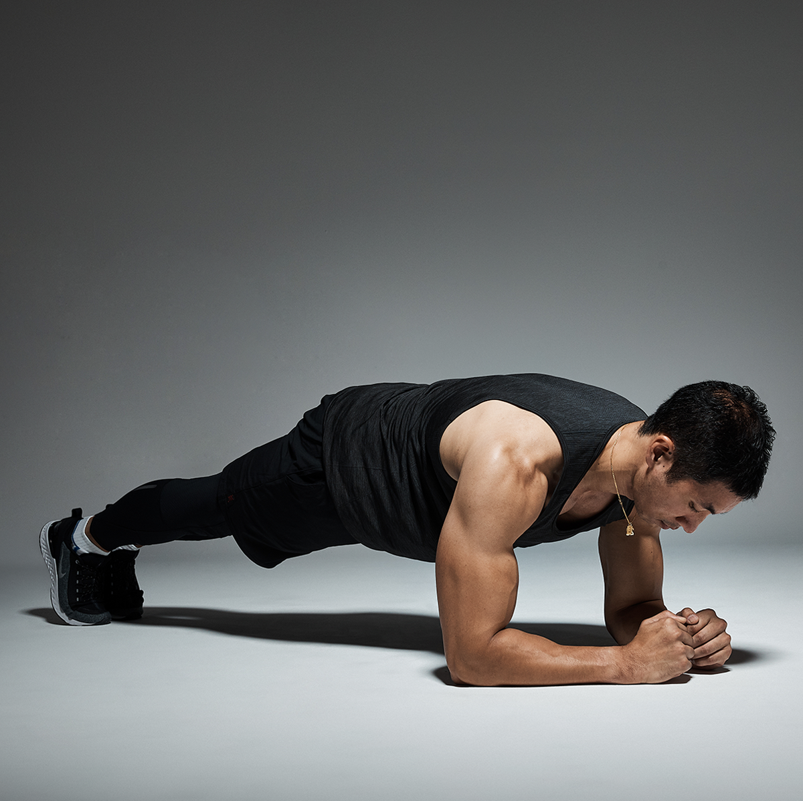
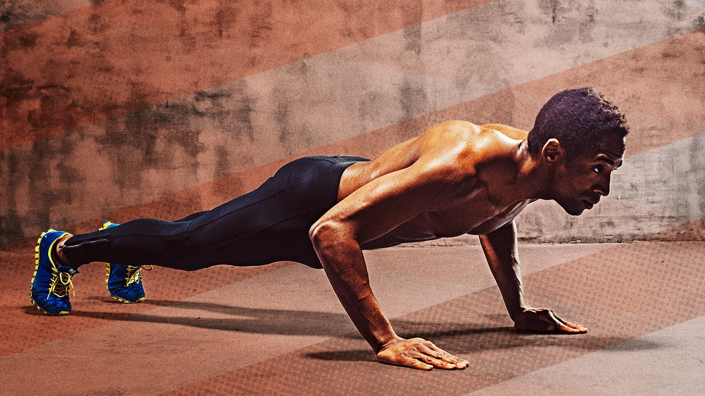
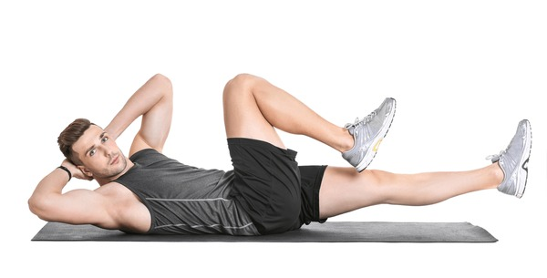

PLANKS
1.Select a position where you can extend your whole body length. Using a yoga mat or exercise mat will give you enough padding to be comfortable on all fours. You can choose whether to perform a plank on your palms or your forearms, as shown in the video. A variety of wrist wraps are available to provide joint support.
Step 1: Begin in the plank position, face down with your forearms and toes on the floor. Your elbows are directly under your shoulders and your forearms are facing forward. Your head is relaxed and you should be looking at the floor.
Step 2: Engage your abdominal muscles, drawing your navel toward your spine. Keep your torso straight and rigid and your body in a straight line from your ears to your toes with no sagging or bending. This is the neutral spine position. Ensure your shoulders are down, not creeping up toward your ears. Your heels should be over the balls of your feet.
Step 3: Hold this position for 10 seconds. Release to floor.
Step 4: Over time work up to 30, 45, or 60 seconds.

push-up
2.Doing a push-up requires getting on the floor on all fours, positioning your hands slightly wider than your shoulders. Don't lock out the elbows; keep them slightly bent. Extend your legs back so you are balanced on your hands and toes, your feet hip-width apart. Once in this position, here is how you will do a push-up.
step.1 Contract your abs and tighten your core by pulling your belly button toward your spine.
step.2 Inhale as you slowly bend your elbows and lower yourself to the floor, until your elbows are at a 90-degree angle.
step.3 Exhale while contracting your chest muscles and pushing back up through your hands, returning to the start position.
step.3 Keep a tight core through the entire push-up. Also, keep your body in a straight line from head to toe without sagging in the middle or arching your back..

Bi-Cycle Crunches
3.Lie flat on the floor on a yoga mat, rug, or towel with your lower back pressed to the ground and knees bent. Your feet should be on the floor and your hands are behind your head.
step.1 Contract your core muscles, drawing in your abdomen to stabilize your spine.
step.2 Hold your head gently with your hands. Pull your shoulder blades back and slowly raise your knees to about a 90-degree angle, lifting your feet from the floor.
step.3 Exhale and slowly, at first, go through a bicycle pedal motion, bringing one knee up towards your armpit while straightening the other leg, keeping both elevated higher than your hips.
step.4 Rotate your torso so you can touch your elbow to the opposite knee as it comes up.
step.5 Twist to the other side, while drawing that knee towards your armpit and the other leg extended until your elbow touches the alternate knee.
step.6 Aim for 12 to 20 repetitions and three sets